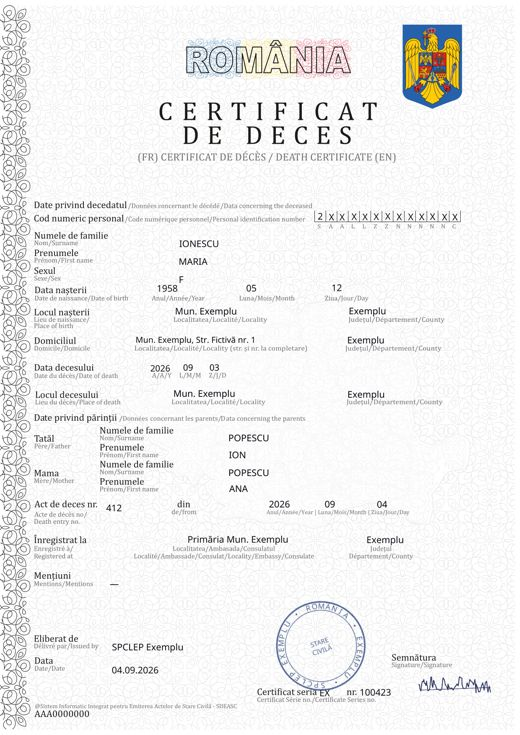
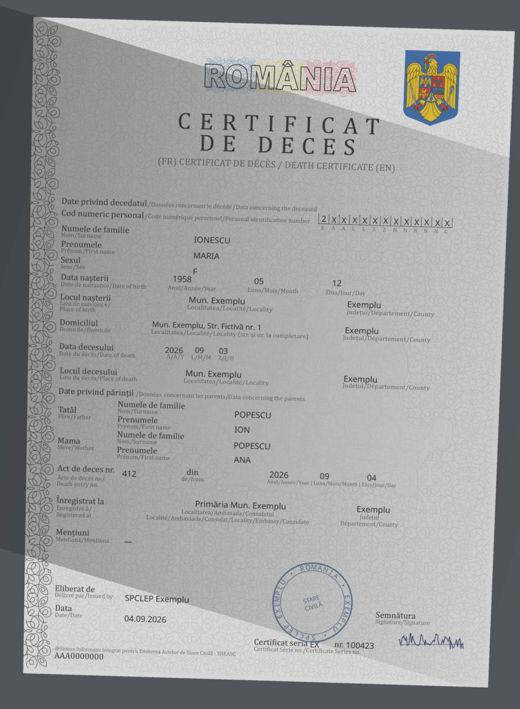

Date fictive. Copii din registries/documents/; ordinea e cea din scenariu (kb/scenariu-demo/maria-ionescu.md §3).
Completat pe formularul oficial MAI (Anexa 3, HG 255/2024), ca certificatele de antrenare. Date fictive, cele din scenariu.


| cnp | 2XXXXXXXXXXXX (CNP-ul mascat din scenariu, clientul RC1001) |
| name | Maria Ionescu |
| birth_date | 1958-05-12 |
| date_of_death | 2026-09-03 |
| father | POPESCU ION |
| mother | POPESCU ANA |
| document_series | EX |
| document_number | 100423 |
| death_record_number | 412 |
| document_variant | certificat_fizic_2024 |
| 01 | Semnal DGEP (electronic, fără hârtie) | date extrase (JSON) |
| 02 | Adresă de la notar | scan PDF (ce primește banca) · text · date extrase (JSON) |
| 03 | Certificat de asigurare | scan PDF (ce primește banca) · text · date extrase (JSON) |
| 04 | Certificat de moștenitor (varianta A) | scan PDF (ce primește banca) · text · date extrase (JSON) |
| 04 | Certificat de moștenitor (varianta B, testament) | scan PDF (ce primește banca) · text · date extrase (JSON) |
| 05 | Răspuns asigurător | scan PDF (ce primește banca) · text · date extrase (JSON) |
| 06 | Certificat suplimentar | scan PDF (ce primește banca) · text · date extrase (JSON) |
| 07 | Certificat de deces ilizibil | scan PDF (ce primește banca) · text · date extrase (JSON) |